iVidLab PEB Bracket (CC3) — Nối dầm PEB vào cột bằng đoạn dầm chờ và hai bản mã bu-lông
Nối dầm PEB vào cột PEB (hoặc dầm vào dầm) bằng một đoạn dầm chờ (bracket) hàn xưởng tại cột, rồi bắt bu-lông hai bản mã giữa bracket và dầm. Bản mã, bu-lông và gân dùng cùng bộ tuỳ chọn như PEB Splice.
Tóm tắt nhanh
- Dầm vào cánh hoặc bụng cột, dầm dốc, dầm xiên trong mặt bằng, dầm vào dầm.
- Nút đỉnh cột 1 đến 4 dầm, mỗi nút cấu hình riêng.
- Bản mã, bu-lông và gân giống PEB Splice; gân cột bật tắt ngay trên hình tab Picture.
- Tự tránh va chạm: tự tăng chiều dài bracket khi dầm dốc làm bản mã hoặc bu-lông chạm cột.
- Có Save / Load / Modify và nút Get lấy giá trị từ liên kết khác.
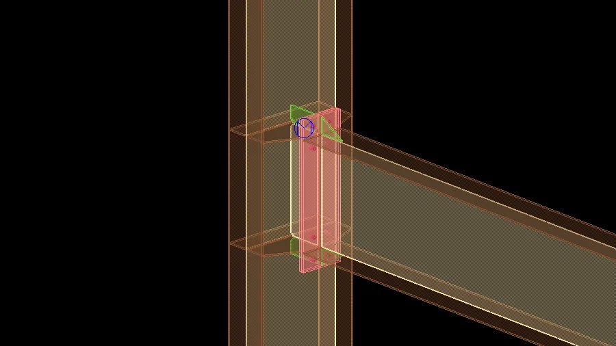
1. Cách dùng
- Mở component PEB Bracket trong bảng Applications & components.
- Chọn cột PEB trước, rồi chọn dầm PEB (chọn tới 4 dầm cho nút đỉnh cột).
- Chỉnh tuỳ chọn trong hộp thoại rồi bấm OK, Apply hoặc Modify.
2. Các kiểu liên kết
Dầm vào cánh cột
Bracket cùng tiết diện dầm (kể cả vát), cắt theo mặt cánh cột; có gân cột hai bên bụng cột.
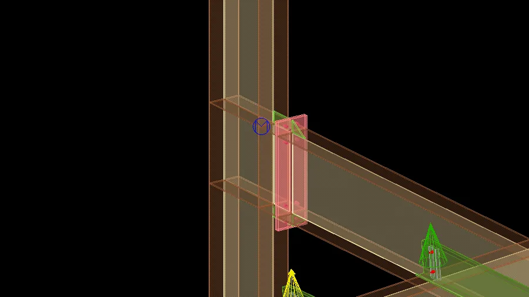
Dầm vào bụng cột
Cánh bracket kín giữa hai cánh cột, gân cột phía sau bụng. Dầm lệch ra ngoài cánh cột thì cánh bracket cắt bậc, vát hoặc cắt chéo.
Dầm dốc
Hình học dựng theo hệ trục cột, không lấn mặt cột, không chồng lấn.
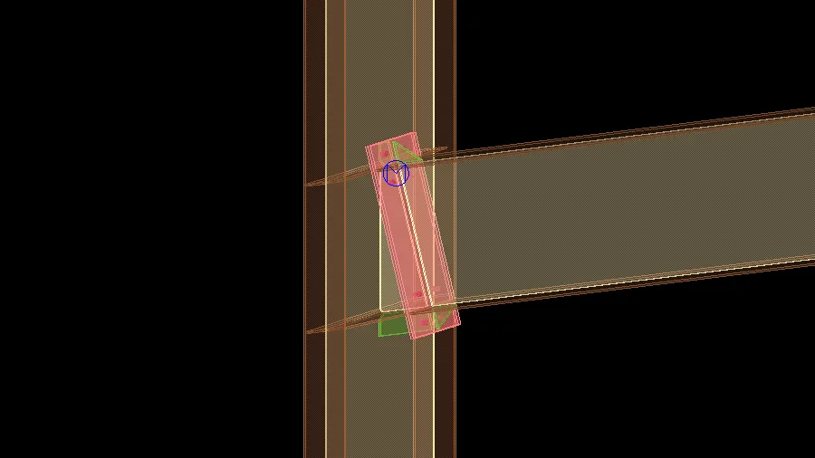
Dầm xiên trong mặt bằng
Dựng theo hệ trục cột như dầm dốc.
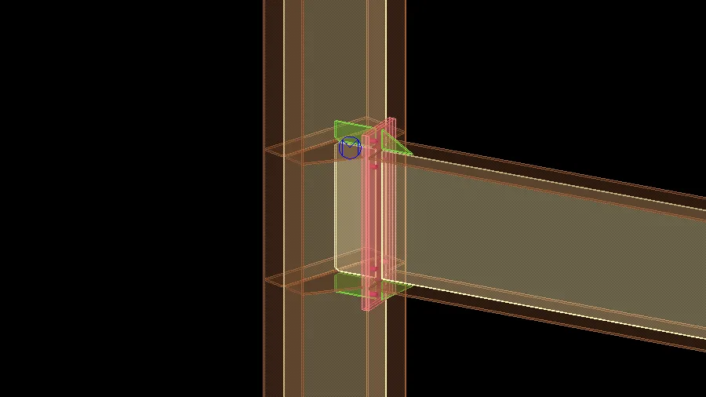
Dầm vào dầm
Dầm phụ vào bụng dầm chính nằm ngang; cánh bracket tựa bụng hoặc mép cánh dầm chính, bụng bracket khoét sát cánh dầm chính.
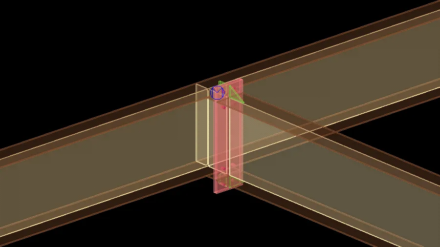
Dầm chính cao hơn: Gusset
Gia cường phía dưới bằng thép hình thang.
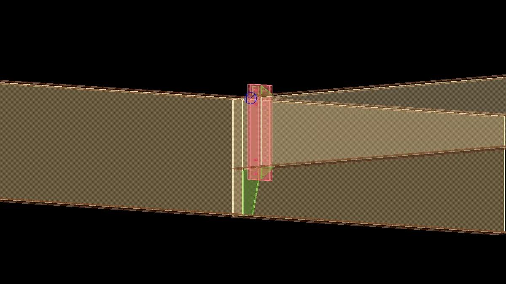
Dầm chính cao hơn: Haunch
Bụng loe, cánh xiên.
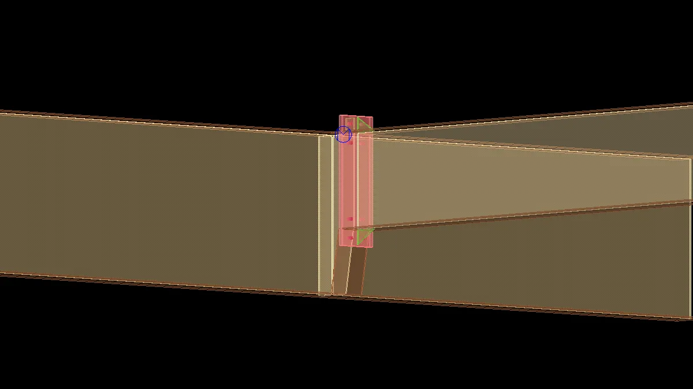
Dầm chính cao hơn: Straight
Thẳng xuống, kèm cặp gân.
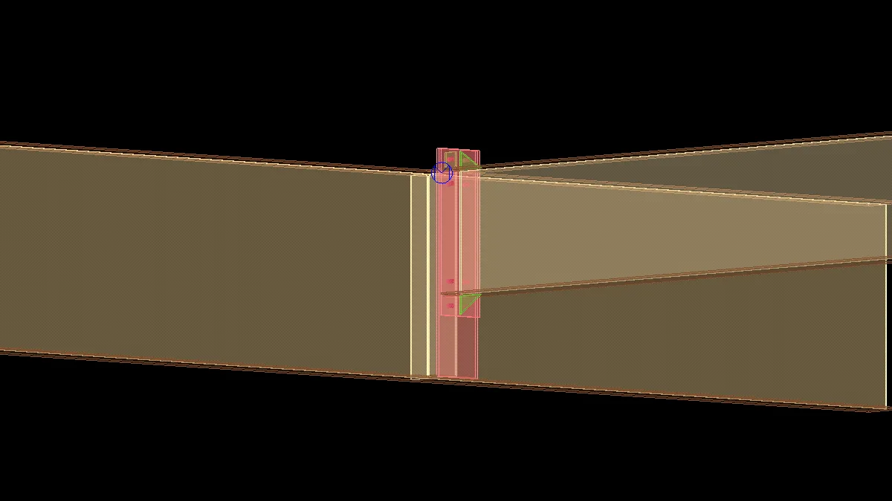
Liên kết đỉnh cột 1 dầm
Có ô Cap offset.
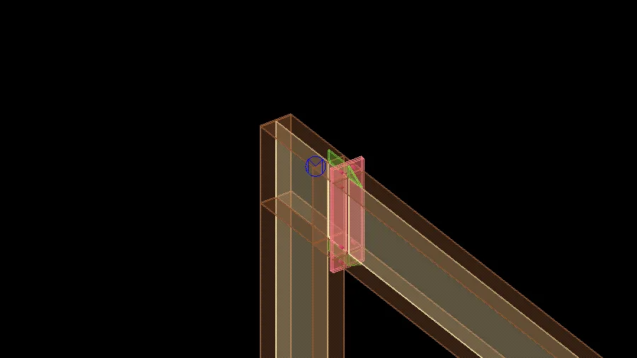
Cột thấp hơn dầm
Tự kéo dài cột và Fit part end theo bản mã.
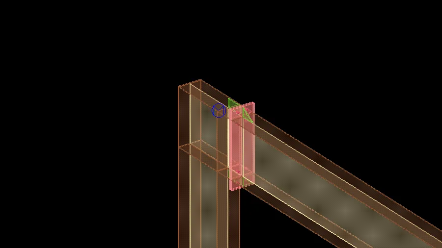
Nút đỉnh cột 2 dầm
Mỗi nút cấu hình riêng ở tab Joint; cánh trên hợp thành một bản mã chung.
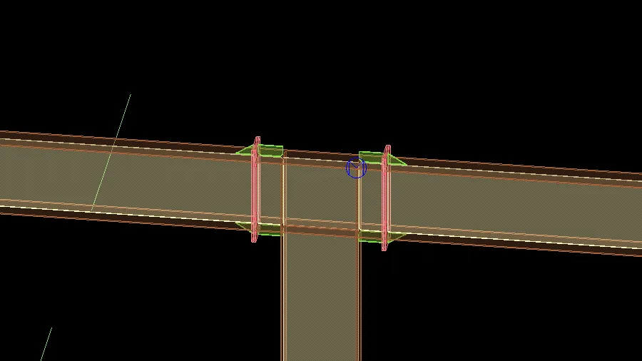
Nút đỉnh cột 3 dầm
Cấu hình riêng từng nút.
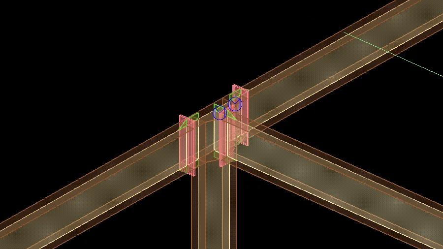
Nút đỉnh cột 4 dầm
Cấu hình riêng từng nút.
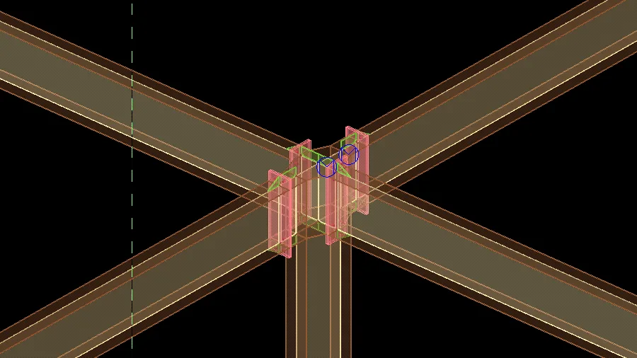
3. Chức năng chính
- Bản mã, bu-lông, gân bản mã như PEB Splice: chiều dày, phần nhô, gage, hàng bu-lông, danh sách khoảng cách, xoá bu-lông, gân tam giác trên dưới, gân bụng.
- Hình dạng cánh bracket khi dầm vào bụng cột: vát, cắt bậc, cắt chéo; góc lõm No / Line / Cope / Arc; vát hai góc bụng.
- Gân phía gối chọn tam giác hoặc chữ nhật có hai chamfer; gân phía dầm luôn tam giác.
- Gân cột: bật tắt từng gân trên dưới và chamfer ngay trên hình tab Picture; dày, Pos No, vật liệu, tên, class ở tab Parts; Offset gân cho cả gân cột và gân dầm chính.
- Chi tiết bracket tách riêng: cánh trên, cánh dưới, bụng, mỗi cái có chiều dày, Pos No, Material, Name, Class. Để 0 là theo dầm.
- Nhãn JOINT 1/2/3/4 trên model: chữ đậm nền trắng, chữ nhẹ hoặc tắt.
- Tự tick ô lọc khi bạn sửa giá trị; nút Get lấy giá trị từ liên kết khác; Save / Load bộ thuộc tính.
4. Hộp thoại
Các tab: Picture (bốn ô Joint, nhãn Joint, Cap offset, gân cột), Joint 1 đến 4 (Bolts, Parts, Bracket / column của từng nút), Stiffeners, Welds, About, License.
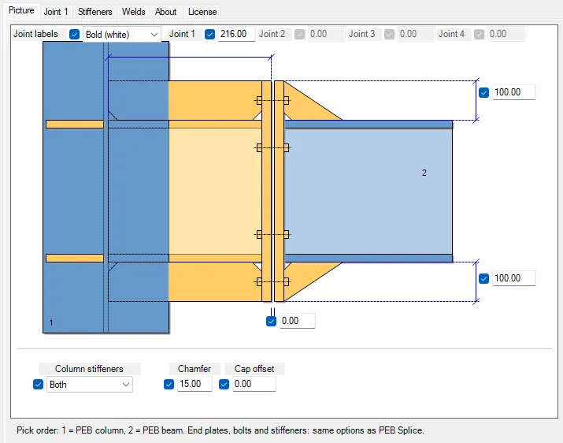
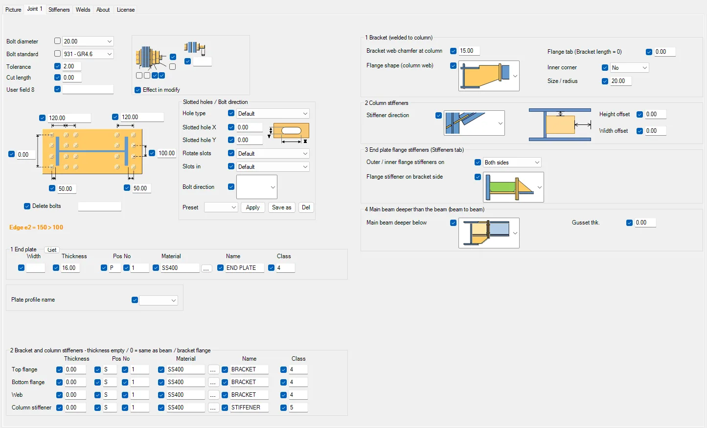
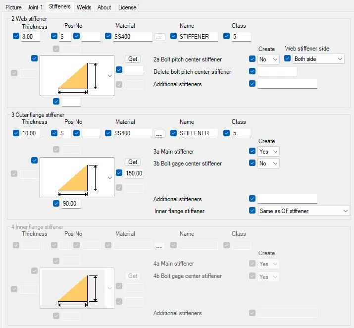
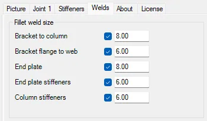
5. Lưu ý
- Dầm chính nhô cao hơn dầm phụ mới có gia cường phía dưới; phía trên chưa làm.
- Đã thử trên Tekla 2017 SP4. Nếu gặp vấn đề trên phiên bản hoặc SP khác, vui lòng phản hồi để chúng tôi sửa.
- Từ 1.49P, Product Key gắn với serial bo mạch và BIOS: máy lắp ráp có mã bo mạch mặc định của nhà sản xuất cài lại Windows vẫn dùng lại được Active Key cũ.
- Liên kết đặt bằng bản trước 1.11 (tên cũ) không Modify được, cần đặt lại.
6. Cài đặt
- Ở mục Tải về bên dưới, chọn phiên bản Tekla đang dùng để tải gói
.tsep(từ Tekla 2016 trở lên). - Nếu đã cài bản cũ, gỡ bản cũ trong Tekla Extension Manager trước.
- Nhấp đúp file
.tsep, tick phiên bản Tekla rồi bấm Import. Gói được cài khi Tekla khởi động lần tiếp theo.
Về giấy phép sử dụng, xem tab License trong hộp thoại hoặc liên hệ ividlab.com@gmail.com.
iVidLab PEB Bracket (CC3) — Connect PEB beams to columns with a bracket stub and two bolted plates
Connects a PEB beam to a PEB column (or beam to beam) with a bracket stub welded in the shop at the column, then bolts two plates between the bracket and the beam. Plates, bolts and stiffeners use the same options as PEB Splice.
At a glance
- Beam to column flange or web, sloped beams, beams skewed in plan, beam to beam.
- Column-top joints with 1 to 4 beams, each joint set on its own.
- Plates, bolts and stiffeners like PEB Splice; column stiffeners toggle right on the Picture tab image.
- Automatic clash avoidance: the bracket is lengthened when a steep beam makes the plate or bolts hit the column.
- Save / Load / Modify and a Get button to take values from another connection.
1. How to use it
- Open the PEB Bracket component in the Applications & components panel.
- Pick the PEB column first, then the PEB beam (up to 4 beams for a column-top joint).
- Set the options in the dialog and click OK, Apply or Modify.
2. Connection types
Beam to column flange
The bracket has the beam section (tapered too) and is cut to the column flange face; column stiffeners on both sides of the web.
Beam to column web
The bracket flanges close between the two column flanges, with column stiffeners behind the web. If the beam sits outside the column flange, the bracket flange is stepped, tapered or cut diagonally.
Sloped beam
Geometry is built on the column axes: no intrusion into the column face and no overlaps.
Beam skewed in plan
Built on the column axes, like sloped beams.
Beam to beam
A secondary beam into the web of a horizontal main beam; the bracket flange rests on the web or the flange edge of the main beam, and the bracket web is notched to the main beam flange.
Taller main beam: Gusset
Lower reinforcement with a trapezoidal plate.
Taller main beam: Haunch
Flared web and sloping flange.
Taller main beam: Straight
Straight down, with a pair of stiffeners.
One beam at the column top
Has a Cap offset box.
Column lower than the beam
The column is extended automatically and fitted to the plate.
Two beams at the column top
Each joint is set on its own Joint tab; the top flanges merge into one common plate.
Three beams at the column top
Each joint configured on its own.
Four beams at the column top
Each joint configured on its own.
3. Main features
- Plates, bolts and plate stiffeners as in PEB Splice: thickness, projection, gage, bolt rows, spacing list, bolt removal, upper and lower triangular stiffeners, web stiffeners.
- Bracket flange shape when the beam meets the column web: tapered, stepped or diagonal; re-entrant corner No / Line / Cope / Arc; chamfer at the two web corners.
- Support-side stiffener as a triangle or as a rectangle with two chamfers; the beam-side stiffener is always a triangle.
- Column stiffeners: toggle each upper and lower stiffener and chamfer on the Picture tab image; thickness, Pos No, material, name and class on the Parts tab; stiffener Offset for both column and main-beam stiffeners.
- Separate bracket parts: top flange, bottom flange and web, each with thickness, Pos No, Material, Name and Class. Leave 0 to follow the beam.
- JOINT 1/2/3/4 labels on the model: bold on white, light, or off.
- The filter checkbox ticks itself when you edit a value; the Get button takes values from another connection; Save / Load property sets.
4. The dialog
Tabs: Picture (four Joint boxes, Joint labels, Cap offset, column stiffeners), Joint 1 to 4 (Bolts, Parts, Bracket / column of each joint), Stiffeners, Welds, About, License.
5. Notes
- A main beam taller than the secondary beam is reinforced below only; the upper side is not done yet.
- Tested on Tekla 2017 SP4. If you hit a problem on another version or service pack, please send us feedback so we can fix it.
- From 1.49P the Product Key is tied to the motherboard serial and the BIOS: self-assembled machines with a default board ID can reuse the old Active Key after reinstalling Windows.
- Connections placed with versions before 1.11 (old name) cannot be modified and must be placed again.
6. Installing
- In the Download section below, select your Tekla version to get the
.tseppackage (Tekla 2016 or newer). - If an older version is installed, uninstall it in Tekla Extension Manager first.
- Double-click the
.tsepfile, tick your Tekla version and click Import. It is installed the next time Tekla starts.
For licensing, see the License tab in the dialog or contact ividlab.com@gmail.com.
Tải vềDownload

Nhóm Zalo người dùng iViDLabiViDLab user group on Zalo
Quét mã QR hoặc bấm nút bên cạnh để vào nhóm: hỏi đáp khi sử dụng, báo lỗi và nhận thông báo bản cập nhật mới.
Scan the QR code or use the button to join the group: usage questions, bug reports and new release announcements.
Liên hệ iViDLabContact iViDLab
Theo dõi fanpage Facebook hoặc gửi email để được hỗ trợ và góp ý.
Follow the Facebook page or send an email for support and feedback.